Del pedido del ingeniero al tablero del jueves: cada viaje se captura una sola vez, y WhatsApp se queda como está.
aiagent.ringlypro.com/neohaulFunciona desde el teléfonoLos choferes no instalan nada
Narrada por Dalia, la voz de Digit2AI. Todas las pantallas muestran datos de ejemplo, no información real de NeoHaul.
01 · Quién hace qué
Cinco personas, y solo dos capturan
1
Osbaldo · director
Ve el tablero del jueves, decide pagos, cambia tarifas y da de alta a los usuarios.
2
Andrés · captura
Anota pedidos, asigna camiones, sube la foto de cada vale y las facturas.
3
Contador
Entra a ver todo: solo lectura. No puede cambiar nada.
4
Choferes
Nada nuevo: reciben el viaje por WhatsApp y contestan con la foto del vale.
5
Ingeniero de HTR
Pide por WhatsApp, como siempre, y recibe su estimación semanal.
La regla de diseño que nos dieron: que se sienta natural. La plataforma quita trabajo, no agrega.
02 · El flujo completo
Un viaje, de punta a punta
1PedidoEl ingeniero pide por WhatsApp; Andrés lo anota.Andrés
2AsignaciónCamión libre y aviso al chofer por WhatsApp.Andrés
3ViajeFoto del vale: la app lo lee, Andrés confirma.Chofer · Andrés
4EstimaciónSemanal por obra, solo viajes confirmados.Andrés → ingeniero
5RequisiciónFOR-FYC-01 con IVA y retención.Andrés
6Factura y cobroFolio CFDI, luego cobrada.Andrés · contador
En paralelo, los costos
DiéselFactura de la gasolinera, carga por carga a cada camión.
Gastos y PPSFacturas de proveedores y la propuesta de pagos semanal.
NóminaSalario y comisión sobre viajes confirmados.
TallerServicios propios y a empresas hermanas.
Todo termina en el tablero del jueves: qué se facturó, qué se debe, qué hay que pagar y cuánto deja cada camión.
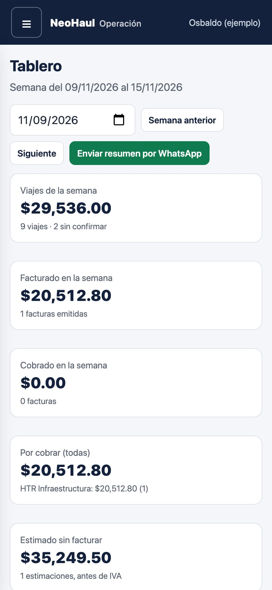
Datos de ejemplo
03 · Entrar
Un enlace, un correo y una contraseña
Se abre en el navegador del teléfono o de la computadora: aiagent.ringlypro.com/neohaul.
Osbaldo da de alta a cada persona en Usuarios; la app muestra una contraseña temporal una sola vez.
Al primer ingreso, la app pide cambiarla. Hasta entonces, no deja hacer nada más.
Cuatro tipos de cuenta: dueño, director, captura y contador (solo lectura).
Cada quien ve lo que le toca. El contador puede revisar todo, pero no puede modificar nada.
Catálogos · Camiones
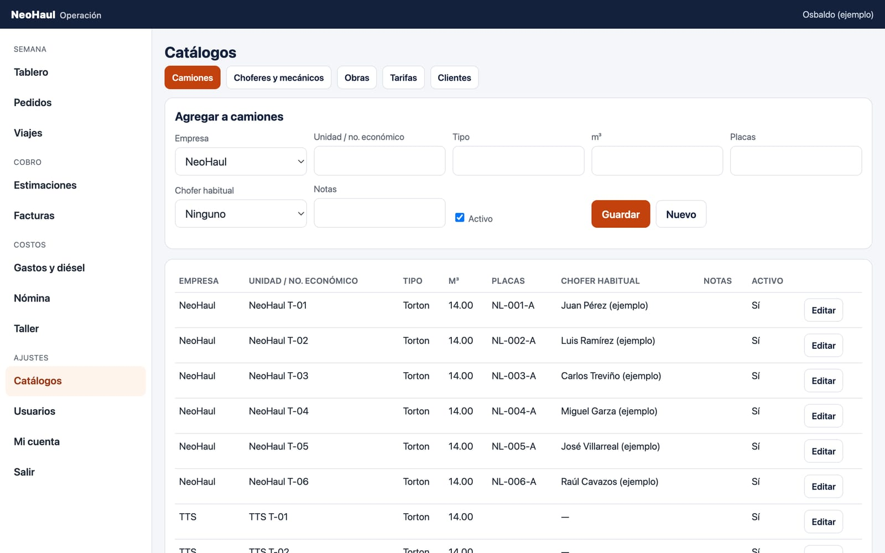
Datos de ejemplo
04 · Antes de empezar
Los camiones, con sus placas
Los de NeoHaul son propios: sus costos cuentan en el tablero.
Los de TTS, SEMAQSA y externos se asignan, pero no se les calcula resultado.
Cada camión lleva su chofer habitual: al elegirlo, el chofer se llena solo.
Con las placas capturadas, la app reconoce el camión directamente en la foto del vale.
Catálogos · Choferes
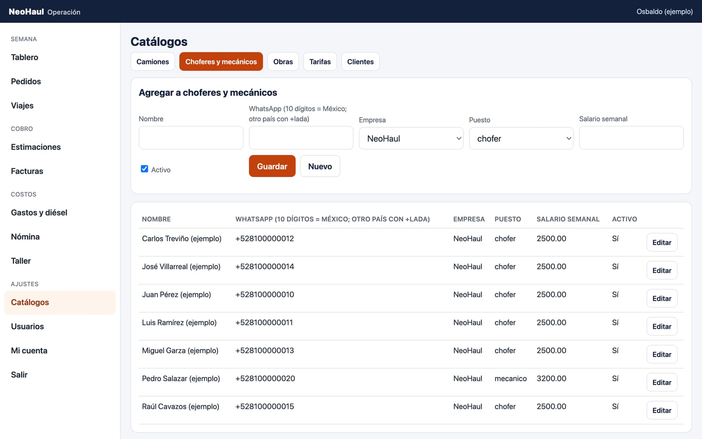
Datos de ejemplo
05 · El WhatsApp de cada chofer
Un número bien escrito evita un mensaje perdido
Diez dígitos se toman como México (+52): 81 2345 6789.
Un número de otro país se escribe con su lada: +1 813 641 4177.
Si el número no es válido, la app no lo guarda y explica por qué.
Un número de Estados Unidos escrito sin +1 se convierte en un número de Monterrey de otra persona. Por eso la app lo advierte.
Catálogos · Tarifas
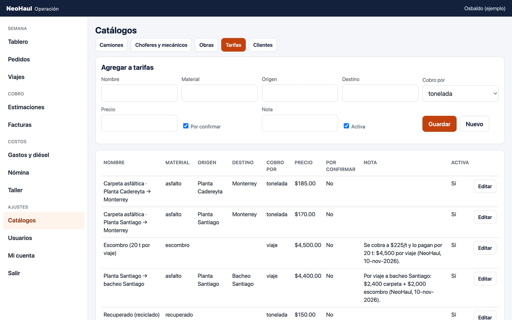
Tarifas de NeoHaul
06 · Las tarifas, sin fórmulas
Osbaldo cambia un precio aquí, no en Excel
Por tonelada, por día o por viaje: $170 y $185 la tonelada, renta de $6,500 al día, $4,400 por viaje a bacheo Santiago y escombro a $4,500 por viaje.
Solo el director puede cambiar una tarifa, y queda registrado el precio anterior y el nuevo.
Cada viaje guarda el precio del día en que se capturó: cambiar una tarifa no mueve viajes viejos.
Pedidos
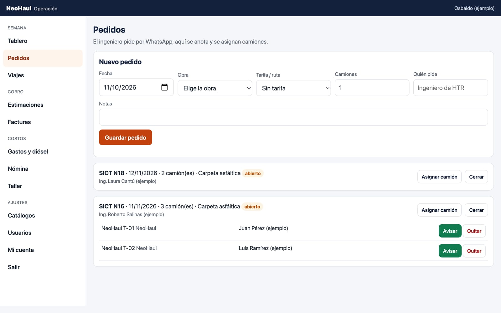
Datos de ejemplo
07 · Paso 1
El ingeniero pide por WhatsApp; Andrés lo anota una vez
Fecha, obra, tarifa, material y cuántos camiones.
Quién lo pidió queda registrado.
Desde ese momento el pedido aparece abierto hasta que se cierra.
Es la única vez que se escribe el pedido: cada paso siguiente le agrega información encima.
Pedidos · Asignar camión
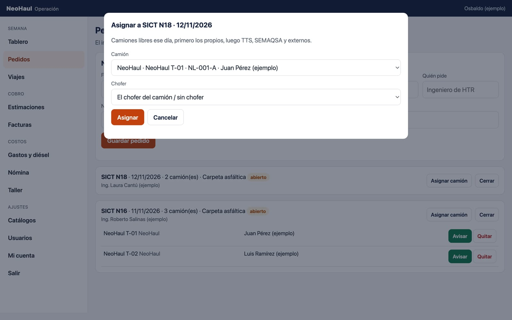
Datos de ejemplo
08 · Paso 2
Solo aparecen los camiones libres ese día
Primero los propios, luego TTS, SEMAQSA y externos.
Un camión ya ocupado en otro pedido ese día no se puede asignar dos veces.
Al lado de cada camión asignado aparece el botón verde Avisar.
JP
Juan Pérezchofer · NeoHaul T-01
MARTES
Hola Juan Pérez. Viaje para SICT N16 el 11/11/2026, material: Carpeta asfáltica. Camión NeoHaul T-01. Al terminar mándame la foto del ticket y del vale. Gracias.
MIÉRCOLES
Listo, ya descargué en la N-16
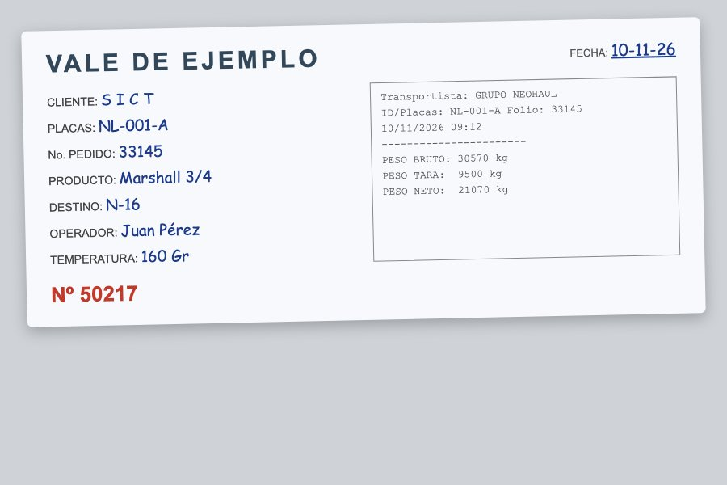
Aquí está el vale
Recibido, gracias Juan
Ejemplo de conversación
09 · WhatsApp se queda
La app escribe el mensaje; Andrés lo envía
Al tocar Avisar, se abre el WhatsApp de Andrés con el mensaje ya escrito: obra, fecha, material y camión.
Andrés solo toca enviar, desde su propio número, como siempre.
El chofer contesta en la misma conversación con la foto del vale y del ticket.
La app marca el camión como avisado.
El chofer no instala nada y no aprende nada nuevo. La app nunca manda mensajes por su cuenta.
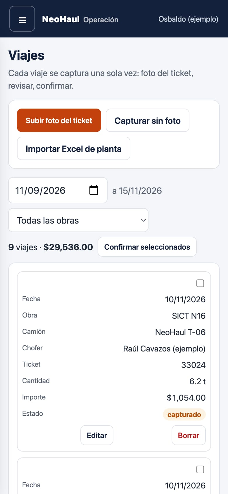
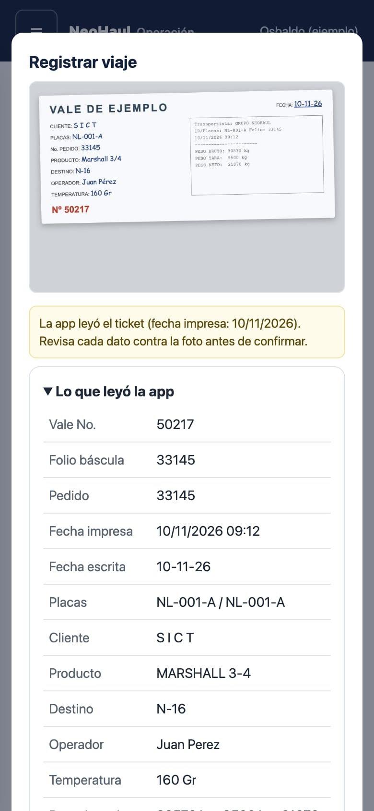
Datos de ejemplo
10 · Paso 3
Foto adentro, datos afuera
Andrés guarda la foto que mandó el chofer y toca Subir foto del ticket.
La app lee el vale: número, folio de báscula, placas, destino, operador y los pesos.
El peso neto viene en kilos: 21,070 kg son 21.07 toneladas.
Propone el camión por sus placas, la obra por el destino y el chofer por su nombre.
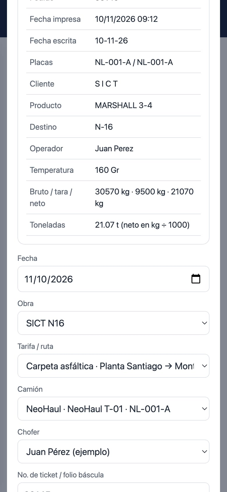
Datos de ejemplo
11 · Como una radiografía
La app propone; Andrés revisa y confirma
Nada se guarda hasta que Andrés toca Guardar y confirmar.
El importe lo calcula la app con la tarifa: nadie lo teclea.
Avisa si algo no cuadra: la fecha escrita a mano distinta de la impresa, el bruto menos la tara que no da el neto, o una tara manual.
El mismo vale dos veces se rechaza: sería el mismo viaje cobrado dos veces.
Como en una radiografía: la máquina propone, la persona decide.
Viajes
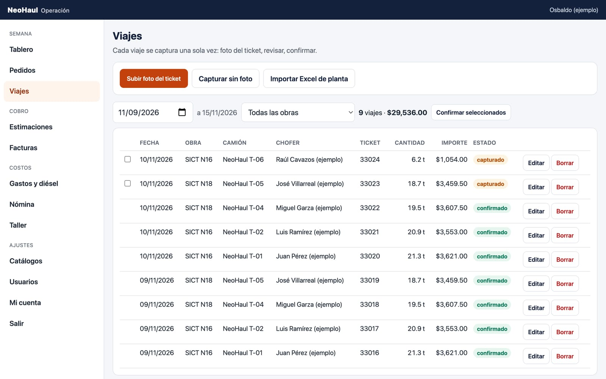
Datos de ejemplo
12 · La semana de un vistazo
Capturados y confirmados, por obra
Cada viaje muestra su obra, camión, chofer, ticket, cantidad e importe.
Varios viajes se confirman de un jalón con Confirmar seleccionados.
El Excel de la planta se puede arrastrar y soltar: cada renglón dice si entró o por qué no.
Un viaje que ya está en una estimación queda bloqueado: no se edita ni se borra.
Estimaciones · Detalle
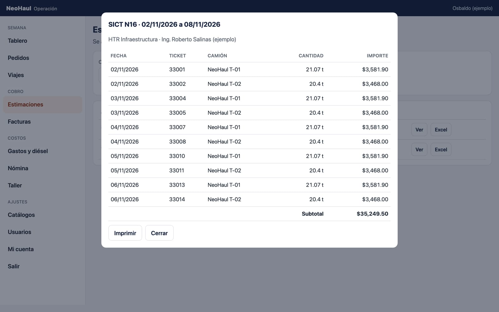
Datos de ejemplo
13 · Paso 4
La estimación semanal sale sola
Se elige la obra y la semana: entran solo los viajes confirmados.
Se descarga en Excel y se envía al ingeniero por WhatsApp con el mensaje ya escrito.
Estados: borrador, enviada, aprobada por HTR y facturada.
Lo que antes era copiar renglones de un Excel a otro ahora es un botón.
Facturas · Requisición FOR-FYC-01
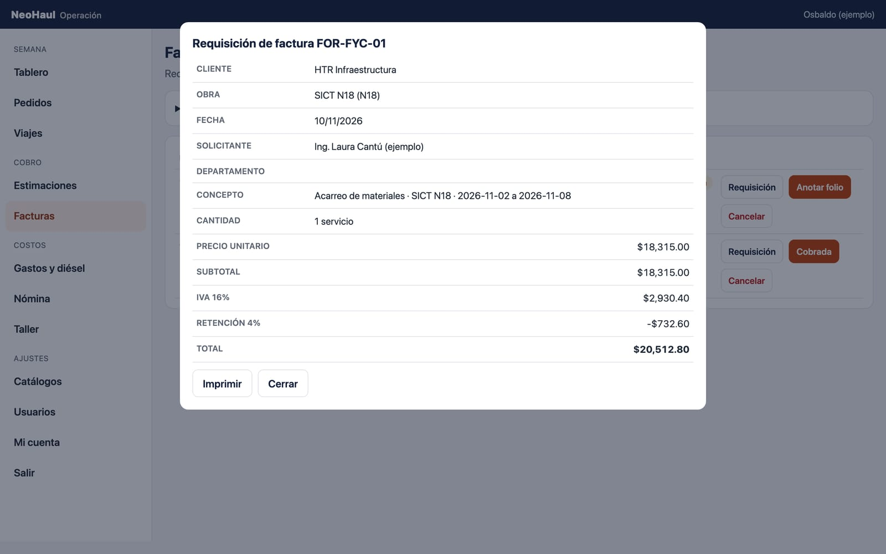
Datos de ejemplo
14 · Pasos 5 y 6
De la estimación aprobada a la factura cobrada
La requisición FOR-FYC-01 se arma sola: subtotal, IVA de 16% y retención de 4%, calculados al centavo.
Cuando la auxiliar emite la factura, Andrés anota el folio CFDI.
Al cobrarse, se marca como cobrada y sale de lo que se debe.
Una estimación no se puede facturar dos veces: con una requisición viva, queda bloqueada.
Gastos y diésel · Cargas por camión
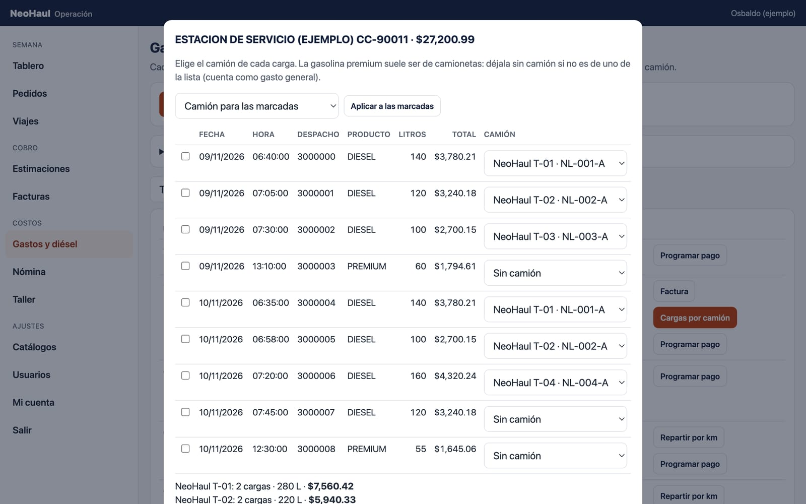
Datos de ejemplo
15 · Diésel
La factura de la gasolinera, carga por carga
Se sube el PDF o XML de la factura: cada carga entra con su folio, fecha, hora y litros.
La app comprueba que las cargas sumen exacto el total; si no, no la acepta.
La factura no dice qué camión cargó: Andrés lo elige. La gasolina premium de las camionetas puede quedar como gasto general.
El costo cuenta en la semana de la carga, no en la de la factura.
Gastos y diésel
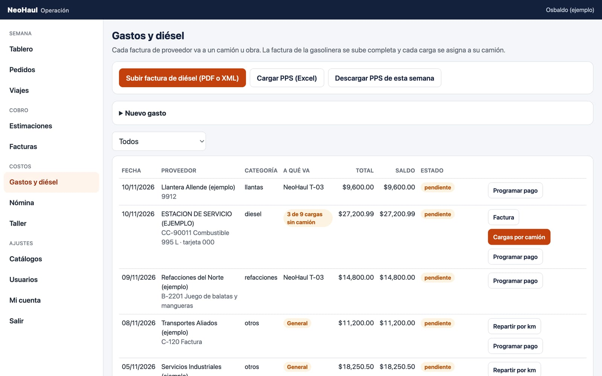
Datos de ejemplo
16 · Cuentas por pagar
Cada factura de proveedor va a un camión, a una obra o a general
Refacciones, llantas o taller se asignan al camión: así se sabe cuánto cuesta cada unidad.
Cargar PPS: se arrastra el Excel de la propuesta de pagos, con sus mismas dieciséis columnas.
Descargar PPS: sale en el mismo formato, con la propuesta de la semana.
Una factura pagada en la app no se reabre con un PPS viejo, y nada se marca pagado solo.
Nómina
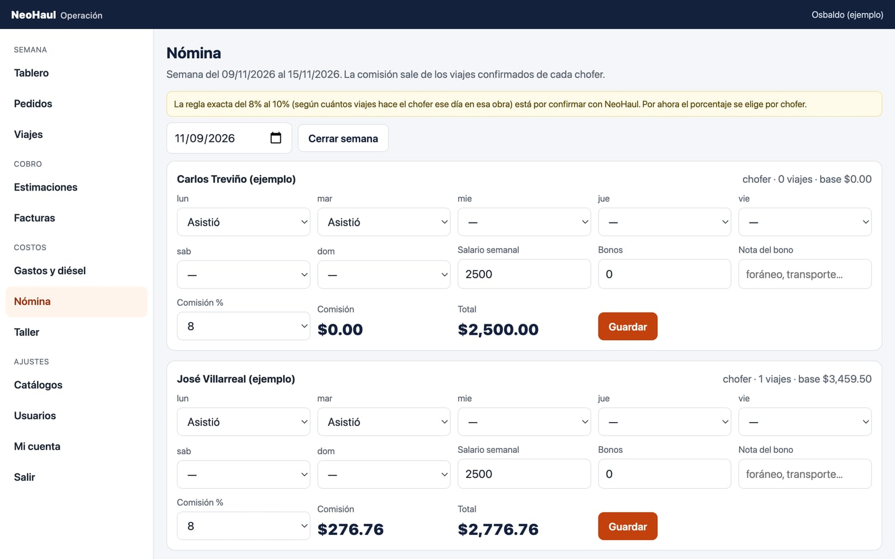
Taller
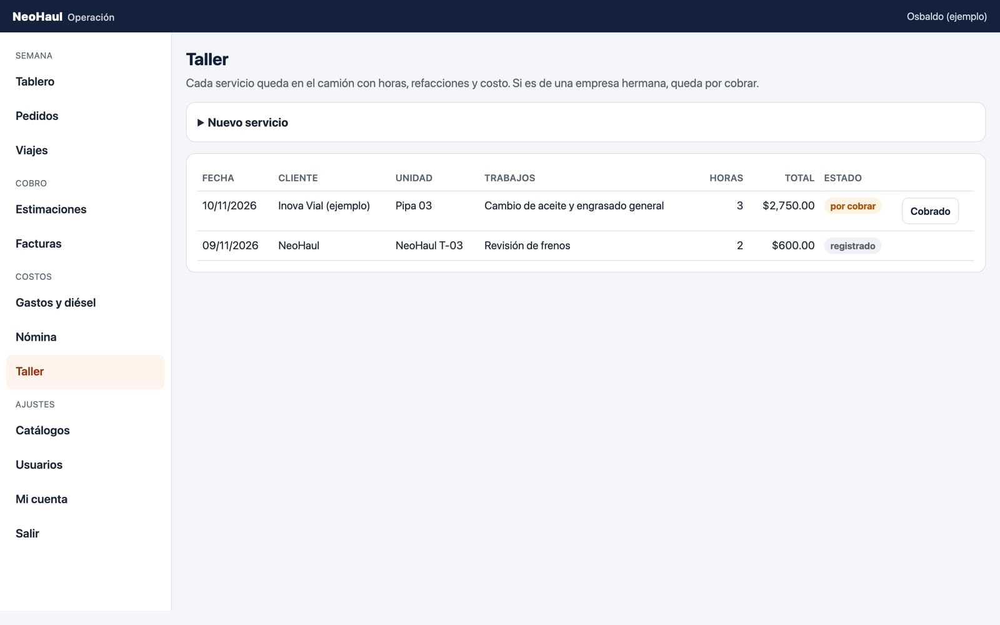
17 · Nómina y taller
Nómina: días trabajados, salario, bonos y la comisión del chofer, de 8 a 10% sobre sus viajes confirmados. Al cerrar la semana, ya no se edita.
Taller: cada servicio con mecánico, horas, refacciones y mano de obra. Los servicios a empresas hermanas quedan por cobrar.
Tablero
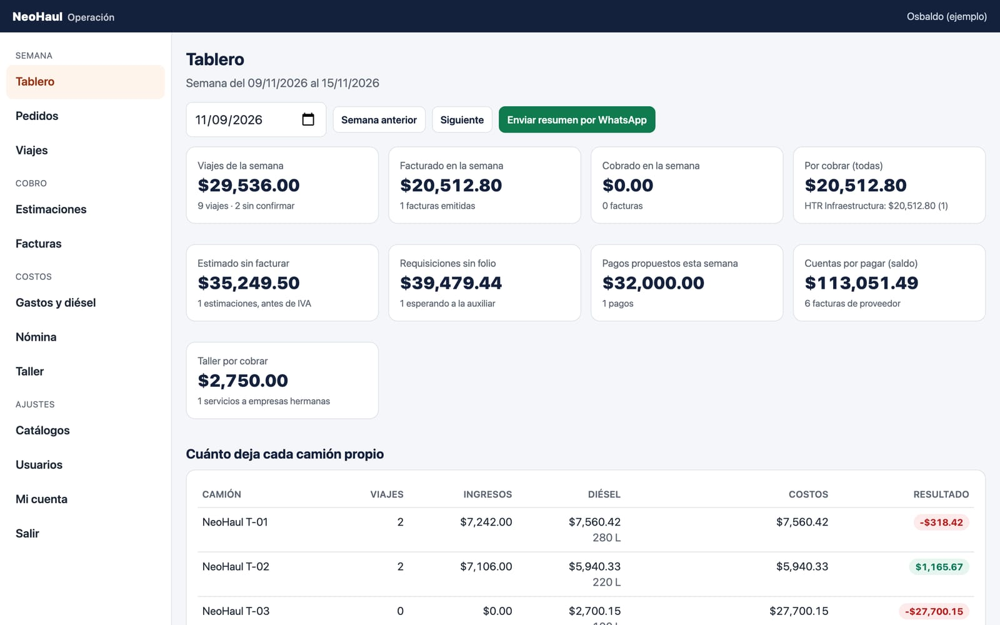
Tablero · Cuánto deja cada camión
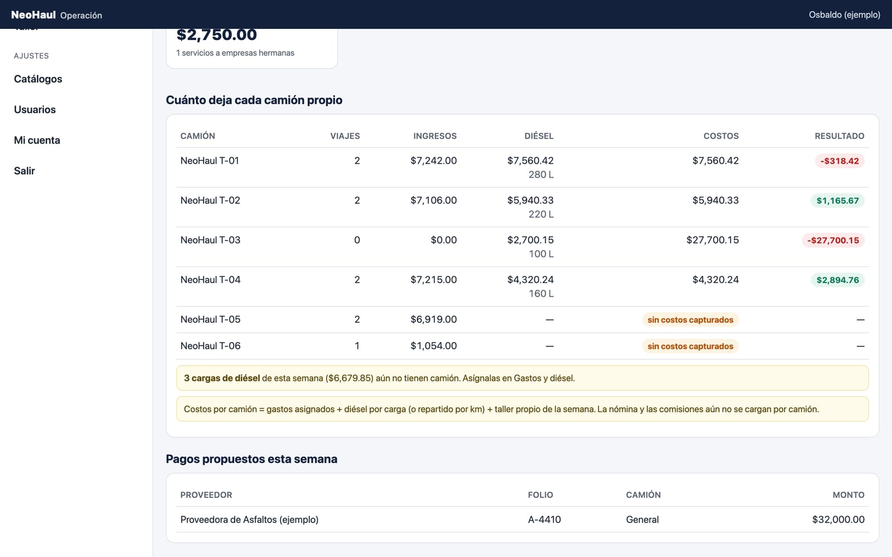
18 · Para decidir el jueves
Facturado, por cobrar, por pagar y cuánto deja cada camión
Un camión con costos más altos que sus ingresos aparece en rojo. Uno sin costos capturados dice sin costos capturados, nunca una ganancia inventada. El resumen se manda por WhatsApp con un toque.
19 · Las reglas que protegen
Lo que la plataforma nunca hace
No manda mensajes sola
Todo WhatsApp lo envía una persona desde su propio teléfono.
No acepta importes tecleados
Viajes, estimaciones, IVA y retención los calcula la app, al centavo.
No guarda una lectura sin revisar
La foto del vale es una propuesta hasta que Andrés confirma.
No cobra dos veces
Un vale repetido o una estimación ya facturada se rechazan.
No inventa ganancias
Sin costos capturados, el tablero lo dice en vez de mostrar una utilidad.
No marca pagado por su cuenta
Lo que ya no viene en el PPS se avisa; la decisión es de ustedes.
20 · Lo que falta y el siguiente paso
Correr en paralelo con el Excel, sin dolor
Lo que necesitamos de NeoHaul
Placas y número económico de cada camión.
Nombre y WhatsApp de cada chofer.
Cómo identifica la gasolinera a cada camión, y el acceso al GPS.
La regla exacta de comisión de 8 a 10%.
Lo que sigue
Sesión con Andrés para capturar una semana real.
Una semana en paralelo con el Excel, comparando cifras.
Conectar el GPS, primero con una descarga semanal.